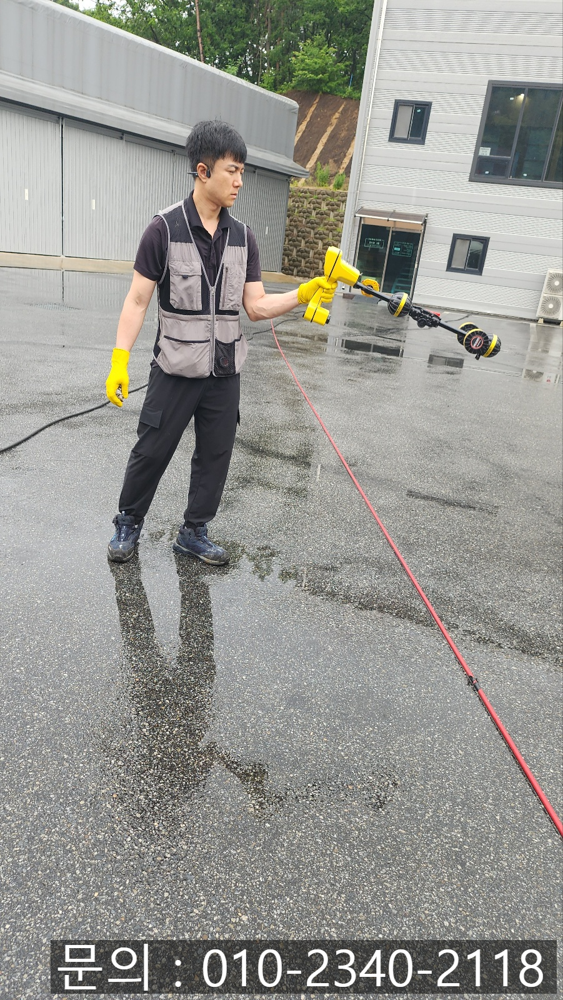
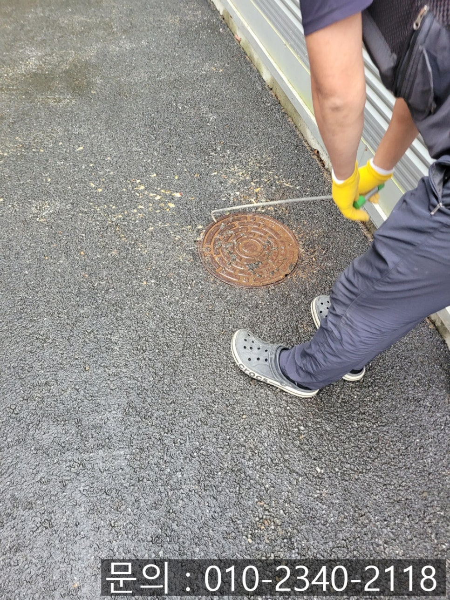
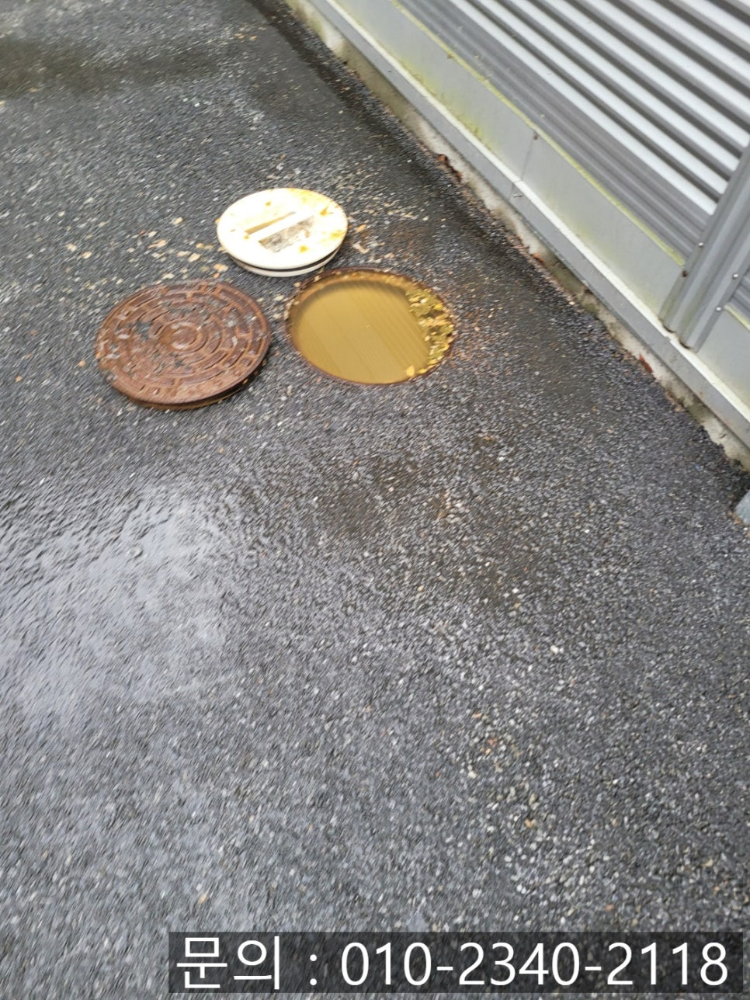
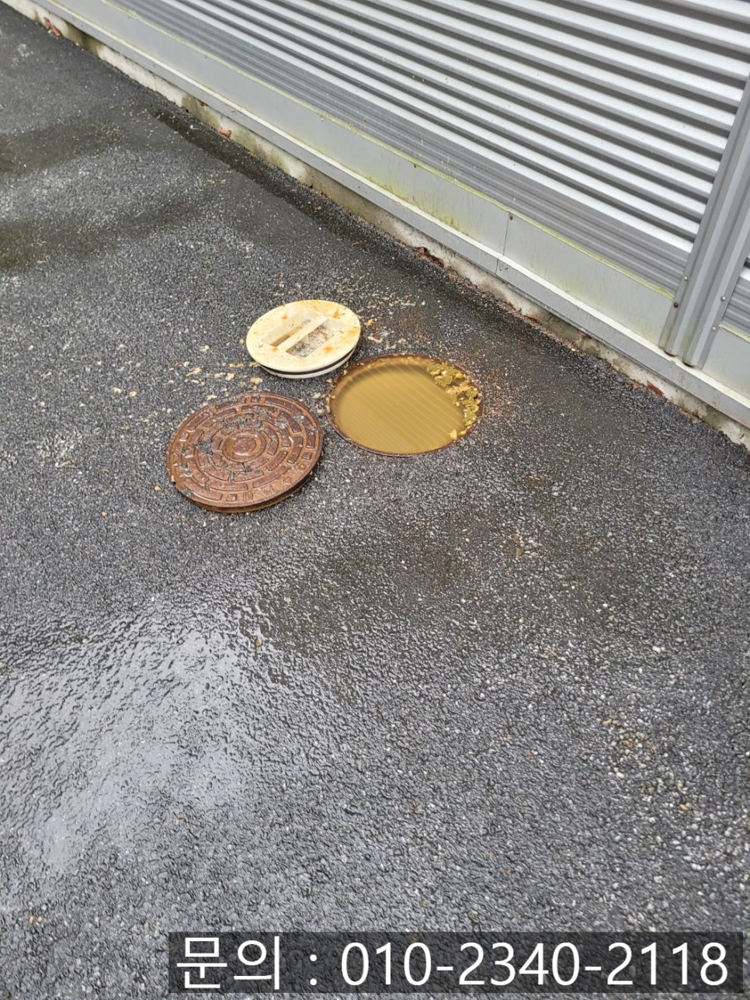
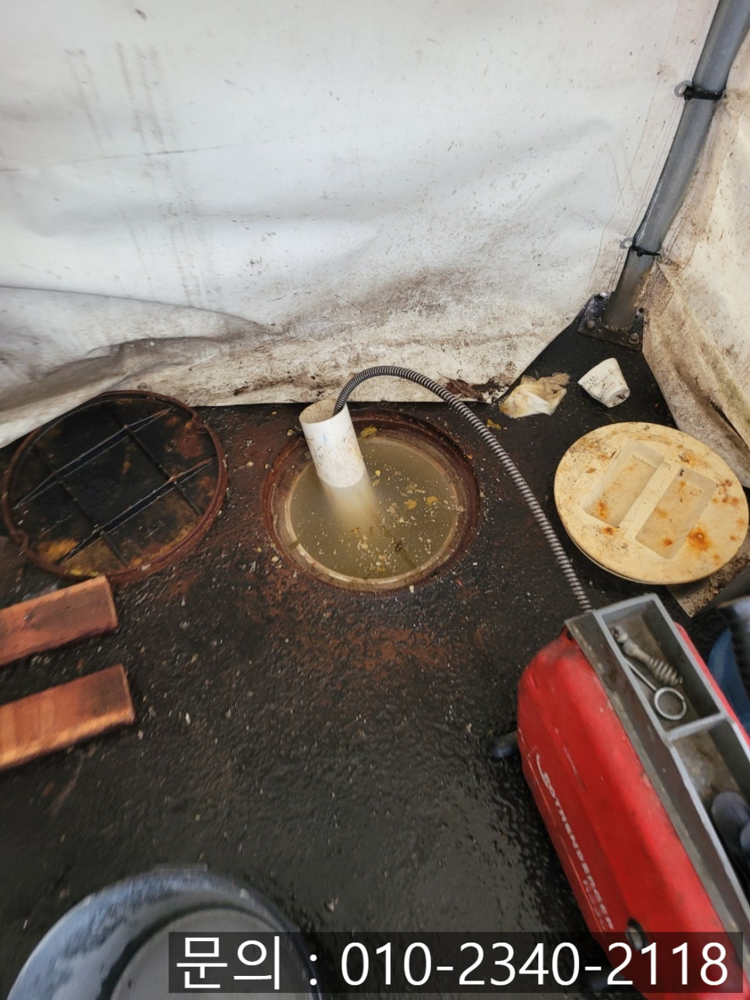
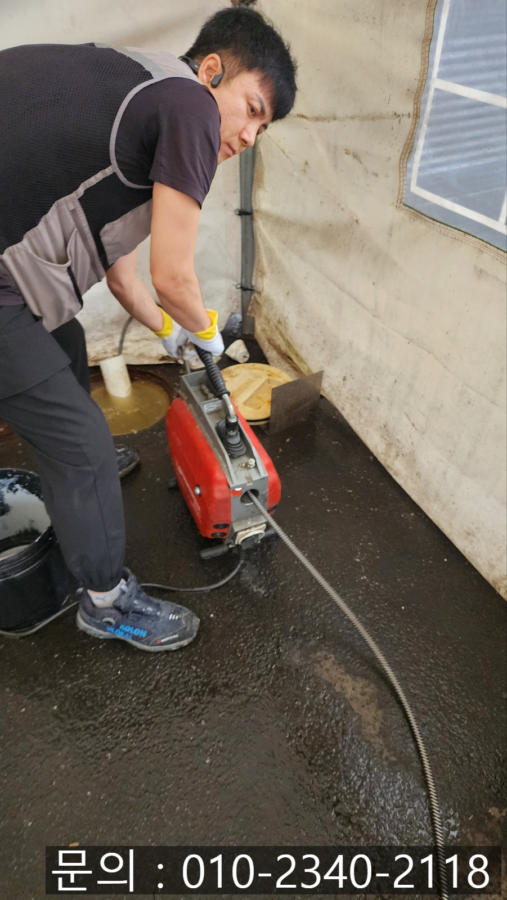

🏠 곡반정동 오수 맨홀 역류 수원 권선동 공장 하수구 배관 막힘 고압세척
수원 곡반정동 하수구막힘 전문 시공 후기

📋 작업 개요
- 위치: 수원 곡반정동, 곡반정동, 수원
- 서비스 유형: 하수구막힘, 배관막힘, 맨홀막힘, 역류해결, 뚫는업체, 배관청소, 고압세척
- 작업 일시: 2025. 6. 30. 22:48
- 업체명: 하수구수사대 (010-5615-2118)
🔍 문제 상황
안녕하세요.
곡반정동 오수 맨홀 역류, 수원 권선동 공장 하수구 배관 막힘 고압세척으로 해결해 드리는 하수구 다큐입니다.
공장의 경우 다양한 배관이 설치되어 있고, 각종 공정에서 발생한 폐수, 직원들의 식당, 화장실 등에서 발생하는 생활 오수까지 모여 배관을 통해 배출됩니다.
이때 중요한 역할을 하는 곳 중 하나가 외부 오수 맨홀인데요.
맨홀이 역류하는 상황이 발생하게 되면 공장 운영에 차질을 줄 수 있어 신속한 해결이 중요합니다.
최근 곡반정동 오수 맨홀 역류 전문 업체 하수구 다큐가 작업한 현장도 비슷한 사례였어요.
공장 부지 외부에 설치된 외부 맨홀에서 역류가 발생해 공장 주변에서 악취가 진동하는 일이 발생한 것입니다.

🔎 원인 분석
💡 전문가 진단: 정밀 진단 장비를 사용하여 슬러지의 고착 여부를 판명하고 타격/세척 작업을 실시했습니다.
오늘은 오수 맨홀에서 역류하는 이유와 함께 곡반정동 오수 맨홀 역류로 연락을 받고 다녀온 현장을 소개해 드리겠습니다.
오수 맨홀이 역류하는 이유는?
가정집과는 다르게 공장의 배관은 사이즈가 크게 만들어지지만 시간이 흐르고 오래 사용하면서 배관 내부에 기름 슬러지, 먼지, 이물질 등 쌓이면서 배관이 좁아지게 됩니다.
특히 기름 성분을 많이 사용하는 제조 공장은 배관 내에 지방 성분이 더 많이 들러붙어 막힘이 발생하기 쉽습니다.
오늘은 공장에서 사용한 물이 역류하는 현상으로 연락을 받고 다녀온 현장을 소개해 드리겠습니다.
공장에서 사용한 물이 흘러나가지 못하더니 심지어 맨홀에서 역류하면서 악취가 진동한다는 전화를 받았습니다.
신속하게 장비를 챙겨 현장으로 달려가 원인을 파악하기 위해 맨홀 뚜껑을 열어보니 사진에 보이는 것처럼 심각한 상태였어요.
꽉 막혀있는 상태이다 보니 사진의 맨홀에서 흘러나가는 다음 맨홀을 찾아 반대 방향으로 작업을 진행할 계획을 세웠습니다.

🔧 작업 과정
우선 막힌 배관 내부에 구멍을 뚫어 통수 시키기 위해 전동 스프링을 사용하기로 했어요.
전동 스프링은 강철 스프링을 이용해 배관 내부의 막힘을 뚫어주는 장비인데요.
배관의 길이가 길거나 구조가 복잡한 경우에도 원활하게 작업할 수 있다는 게 장점입니다.
항상 구비하고 다니는 배관으로 길을 만들어주고, 전동 스프링을 진입시켜 작업을 진행했습니다.
쌓인 이물질에 구멍을 뚫어 물길은 만들어졌지만 워낙 많은 양의 기름 슬러지와 이물질이 쌓여있는 모두 제거하기에는 역부족이었습니다.
고객님께 내시경 카메라를 이용해 배관 내부를 확인 시켜드리며, 작업 계획을 말씀드렸어요.
워낙 배관의 크기도 크고, 길다 보니 고압세척 장비를 이용해 이물질을 제거하기로 했습니다.
고압세척 장비는 차량 오른쪽에 보이는 물탱크에 많은 양의 물을 채운 다음 짧은 시간 동안 쏟아져 나오는 고압의 물줄기를 이용해 기름 슬러지와 각종 이물질을 밀어내 주는 장비예요.
워낙 고압의 물을 사용하다 보니 배관의 크기가 크고 길어도 시원하게 뚫어주는 역할을 하는데요.
아마도 현존하는 배관 청소 장비 중 최고라고 할 수 있습니다.
수원 권선동 공장 하수구 배관 막힘을 해결하기 위해 여러 차례 반복해 고압세척을 진행해 드렸어요.
시간이 꽤 소요되었지만 이물질이 모두 제거되고 깨끗해진 배관 내부를 확인할 수 있었습니다.


✅ 작업 완료
하수구 막힘의 경우 현장마다 배관의 크기도 막힘의 원인도 모두 다르기 때문에 다양한 경험과 전문적인 장비를 갖춘 업체를 섭외해 해결하시는 것이 바람직합니다.
하수구 다큐는 다양한 경험으로 쌓은 노하우를 바탕으로 어떤 현장이던 완벽하게 뚫어드리고 있습니다.
지금 하수구 막힘으로 고민하고 계신다면 연락 주세요.
경기도 수원시 권선구 곡선로49번길 5-14 1층 101호




⚠️ 하수구 배관 막힘 예방 및 관리 가이드
- ✅ 머리카락, 비닐, 물티슈 등 물에 분해되지 않는 이물질은 하수구 유입을 절대 금지해 주세요.
- ✅ 하수구 거름망을 씌우고 모여진 이물질은 주기적으로 쓰레기통에 바로 비워주셔야 합니다.
- ✅ 배관 노후가 심할 경우 이물질이 더 쉽게 걸리므로 주기적인 배관 세척(고압세척 등)을 권장합니다.
- ✅ 작업 후 1년 이내 재발 시 하수구수사대에서 무상 A/S 보증 서비스를 제공합니다.
💡 핵심 정리
- 확실한 장비 작업(내시경 점검 및 샤프트 스케일링)으로 원인을 뿌리 뽑습니다.
- 작업 후 1년 이내에 동일한 부위 재발 시 100% 무상 A/S 서비스를 보장합니다.
- 서울 · 경기 · 인천 전 지역에 24시간 언제든 긴급 출동할 수 있도록 항시 대기 중입니다.
❓ 자주 묻는 질문 (FAQ)
🚨 수원 곡반정동 하수구막힘 문제로 고민이신가요?
정확한 원인 진단과 확실한 시공으로 재발 없는 해결을 약속드립니다.
24시간 긴급 출동 | 서울 · 경기 · 인천 전지역 | 1년 내 재발 시 무상 A/S